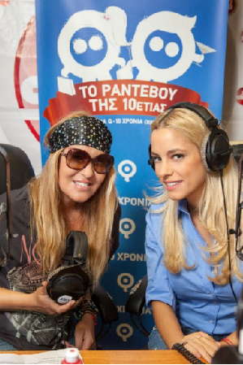

Written by Bakas Vasileios, Daratzikis Ioannis, Mylonas Alexandros
Το Internet marketing ορίζεται ως η διαδικασία της δημιουργίας αλλά και της διατήρησης σχέσεων με τους πελάτες μέσω online δραστηριοτήτων για τη διευκόλυνση της ανταλλαγής ιδεών, προϊόντων και υπηρεσιών που ικανοποιούν τους στόχους και των αγοραστών και των πωλητών.
Imber and Betsy-Ann,2000
| Web Design & Development | E-Gaming | Social Media | E-mail Marketing | Viral Marketing | Mobile Marketing |
SEO |
Αρχικά η εταιρεία δημιουργήθηκε το 2002 από τον επιχειρηματία Θεόδωρο Φέσσα και δραστηριοποιούνταν στον τομέα των τηλεπικοινωνιών, ο οποίος ήταν παράλληλα ιδιοκτήτης της Info-Quest η οποία δραστηριοποιείτε στον τομέα της πληροφορικής.
Επειδή η Info-Quest είχε σοβαρά οικονομικά προβλήματα ο επιχειρηματίας αναγκάστηκε να πουλήσει το 2005 την Q-Telecoms στην TIM Hellas (vuv Wind) έναντι του ποσού των 330 εκ.ευρώ. Η εξαγορά άλλης μίας εισηγμένης εταιρίας εξασφάλισε στον όμιλο Info- Quest τα δικαιώματα διανομής των προϊόντων της Apple στην Ελλάδα.
Φιλικό στον χρήστη, ιδιαίτερα στο νεανικό κοινό.
Περιεκτική όσον αφορά τις πληροφορίες που προσφέρει.
Έντονα χρώματα,γραφικά και εικόνες.Έντονη η παρουσία των χαρακτήρων που χρησιμοποιούνται στις διαφημίσεις, που είναι και το σήμα κατατεθέν της εταιρείας.
Μέσω της σελίδας του Facebook ο χρήστης έχει την δυνατότητα να ενημερώνεται για τα τελευταία νέα της εταιρείας καθώς και να λαμβάνει μέρος σε διάφορους διαγωνισμούς απλά κάνοντας ένα σε μία φωτογραφία.
Μικροί χαρακτήρες κινουμένων σχεδίων που έμοιαζαν με το λογότυπο της εταιρείας και χρησιμοποιούσαν γλώσσα αργκό και χιουμοριστικές ατάκες
Με την υπηρεσία του e-mail η εταιρία σου δίνει την δυνατότητα αφού εγγραφείς, να λαμβάνεις ενημερώσεις για όλα τα θέματα της Q μέσω e-mail.
Για να ενισχύσει την εμπορική της εικόνα και τα έσοδά της ανέπτυξε μία πλατφόρμα υπηρεσιών με μεγάλη γκάμα παιχνιδιών για κινητά τηλέφωνα.
Μέσω της εγγραφής του σε αυτήν την υπηρεσίας ο χρήστης απολαμβάνει κάποια προνόμια ,όπως άμεση και πλήρη ενημέρωση για τα τρέχοντα υπόλοιπα σε λεπτά-SMS-MBs.
Ταυτόχρονα το σημαντικότερο προνόμιο της υπηρεσίας είναι ότι σου δίνει την δυνατότητα ενεργοποίησης πακέτων ομιλίας και όχι μόνο
Σκοπός
Αποτελέσματα